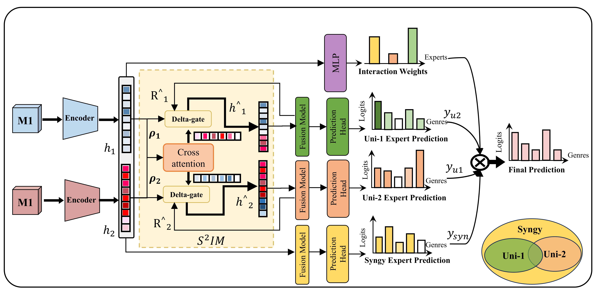

Adaptive sparse interaction
Cross-attention retains a modality-specific subset of context tokens, then injects cross-modal residual evidence.
Anonymous review artifact · v1.0
ISI-MoE estimates sample-level modality importance with MIR, calibrates modality strength through AMSS, and uses S2IM to specialize experts in modality-specific and synergistic information.
No author names, affiliations, analytics or identity-bearing repository links are included.
Method at a glance
Complete architecture

01 · Method
Multimodal collaboration is asymmetric: different modalities contribute unequally across samples and require different interaction directions and strengths. ISI-MoE combines MIR, AMSS, sparse incremental cross-attention and PID-grounded S2IM in an end-to-end framework.
Cross-attention retains a modality-specific subset of context tokens, then injects cross-modal residual evidence.
Specialists model modality-dependent evidence while a shared expert preserves information useful across inputs.
A learned reweighting network blends predictions per example as evidence quality and availability change.
task + interaction + gate + auxiliary + orthogonalityTerms are enabled and weighted by the reference recipes.02 · Evaluation surface
Loaders and commands are included. Raw data governed by licenses or data-use agreements must be obtained from the original provider.
Imaging · Genomics · Clinical · Biospecimen
Text · Vision · Audio
Language · Image
Screenshot · Wireframe
03 · Reproduce
Download the repository source, prepare the licensed datasets and run all commands from the repository root.
Install the pinned packages in a clean Python 3.10 environment.
Follow the documented tree; restricted records are not redistributed.
Start with non-sparse Transformer fusion before a full sweep.
Review metrics, routing weights, checkpoints and MIR trajectories.
unzip isimoe-anonymous-main.zip
cd isimoe-anonymous-main
conda create -n isimoe python=3.10 -y
conda activate isimoe
pip install -r requirements.txt
python src/isimoe/train_transformer.py \
--data mosi \
--modality TVA \
--fusion_sparse False \
--amss_enabled True \
--seed 0See README.md for the data layout and reference commands.
04 · Double-blind readiness
The website is a navigation layer for code already available in the artifact. It does not rely on a future post-acceptance release.
Identity scrubbedNames, affiliations, emails, personal paths and analytics are absent.
Code available nowThe archive contains the implementation and reference scripts.
Reproduction documentedEnvironment, data tree, seeds, commands and outputs are described.
Data constraints explicitRestricted data are not redistributed; required files are listed.